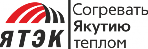

ПАО "ЯТЭК"
Основное и старейшее газодобывающее предприятие Республики Саха (Якутия), ведет свою историю с 1967 года, обладает уникальной экспертизой эффективного оперирования в экстремальных климатических условиях. За время существования ЯТЭК потребителям Якутии было поставлено более 59 млрд м³ природного газа.

История компании
Наша компания была основана в 1967 году одновременно с первыми практическими шагами, направленными на газификацию Республики Саха. В течение последующих 55 лет специалисты ЯТЭК осваивали новые месторождения в непростых климатических условиях природы Якутии, обеспечивая теплом и энергией дома жителей Республики и предприятия самого северного региона России. Год за годом компания вносила значительный вклад в социальное развитие Якутии: ЯТЭК построила десятки жизненно важных социальных объектов.
Началом нового исторического этапа для компании можно считать 2019 год. С этого момента развиваются новые перспективные направления деятельности, увеличиваются объемы добываемого сырья, внедряются прогрессивные подходы в управлении производством.
Генеральный директор
Андрей Владимирович Коробов
Имеет 25-летний опыт работы в области создания и управления бизнес-структурами, а также финансовых и промышленных групп. Успешный опыт в реализации создания крупных межотраслевых холдингов с использованием механизмов государственно-частного партнерства и кратного увеличения капитализации проектов. Управление международными инвестиционными фондами на разных стадиях: от создания до полной реализации инвестиционного портфеля.